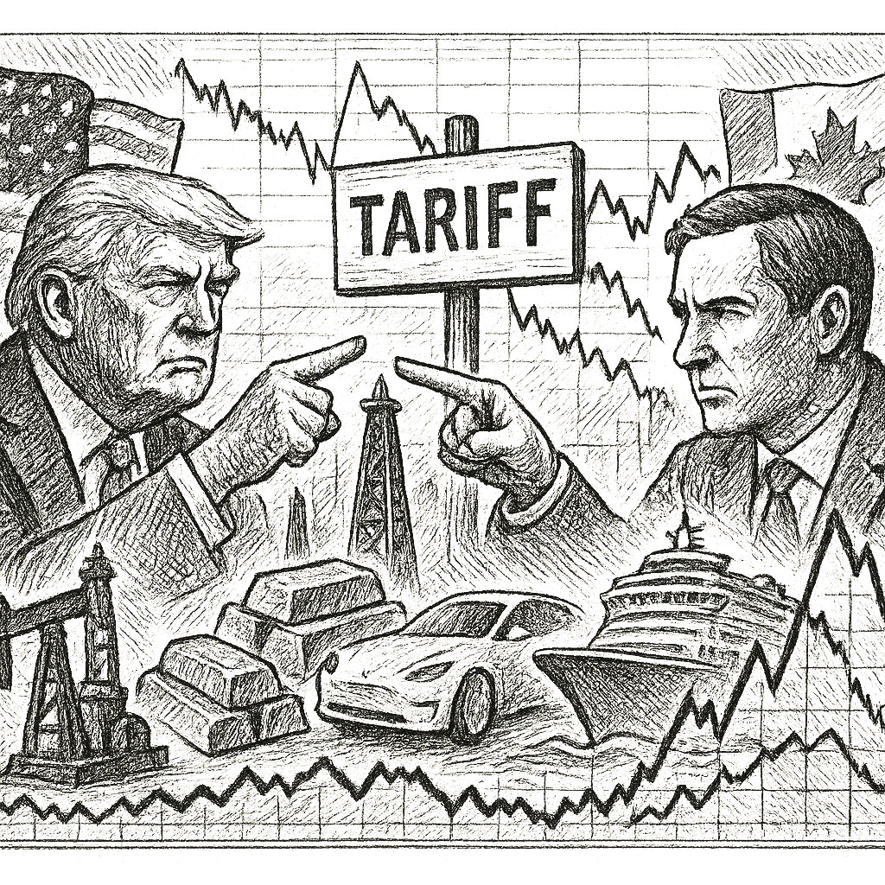

SPY
Current: $762.87Change: -9.80 (-1.27%)
Updated:
Source: yahoo_chartFreshness: fresh


Investors react to escalating tariffs and geopolitical developments, impacting market sentiment and sector performance.

Today's Headline: U.S.-Canada Trade Tensions Weigh on Markets Amid Mixed Economic Signals
Setup: Investors react to escalating tariffs and geopolitical developments, impacting market sentiment and sector performance.
Primary Topic: U.S.-Canada Trade Relations
Specific Development: President Trump announced a 50% tariff on Canadian auto imports, escalating trade tensions.
Why Today Is Different: This announcement has triggered significant market reactions, particularly in sectors sensitive to trade policies.
Secondary Topics: Market Volatility; Sector Performance; Geopolitical Risks
Tone: Cautious
Sectors: Technology; Industrials; Consumer Discretionary
Companies: Tesla; Nvidia; Royal Caribbean
Commodities: Oil; Gold; Copper
Countries Or Regions: United States; Canada
Macro Themes: Trade Policy; Market Sentiment; Economic Growth
Why This Story: The trade tensions could have far-reaching implications for U.S. economic growth and investor sentiment.
Why This Matters: How Investors Are Reacting To Royal Caribbean (RCL) Earnings Beat And New US$1.25 Billion Debt Refinancing is the clearest current evidence-led frame for Joshua's observation-only review; missing facts remain explicit intelligence gaps.

Summary: Global markets are reacting to U.S.-Canada trade tensions, with notable declines in technology and industrial sectors.
What Happened Overnight: U.S. markets opened lower, driven by concerns over trade policies and their potential impact on economic growth.
What Changed Materially: The announcement of tariffs has shifted market sentiment, leading to declines in major indices.
Which Assets Sectors Are Affected: Technology and industrial sectors are experiencing the most significant declines.
Does It Look Like Noise Or A Real Regime Input: This appears to be a real regime input, given the direct implications for trade and economic growth.
Why This Matters: Joshua can use verified cross-asset moves and deterministic risk context while keeping causation explicitly unresolved.


- WOPR learning pipeline: Collecting samples
- Candidates evaluated 24h: 0
- Current gate: Evidence
- Notification ledger events in 24h: 20
- Pending orders created/canceled/filled/expired: 4/3/0/0
- Pending lifecycle interpretation: Pending-order cancellations have trackable reasons and no obvious rapid churn pattern.
- Portfolio risk: Label: Low / Score: 29.3
- Latest intelligence gap report: intelligence_gap_report_2026-08-23.pdf
Why This Matters: The active gate is Evidence, so the key question is why candidates are stopping before approval, not how to force trades.

- Sentinel role: infrastructure and operational status only.
- State: ONLINE
- Last successful validation: 2026-08-24T14:12:50.293081+00:00
- Payloads accepted/rejected: 13888/0
- Node health score: 100
Why This Matters: Sentinel is ONLINE, so Joshua should use its context only to the extent the latest accepted pulse is fresh and authenticated.

CANDIDATES MOVING THROUGH JOSHUA'S INVESTMENT-REVIEW WORKFLOW
FROZEN DAILY BRIEF SNAPSHOT | 2026-08-24T14:01:06.781034+00:00
QUEUE SUMMARY | Investment Ready: 0 | Waiting for Price: 0 | Waiting for Evidence: 3 | Research Underway: 1 | Governance Hold: 2 | Monitor Only: 0
Investment-ready status: No candidates are currently Investment Ready.
#5 QBTS - Waiting for Evidence [Moved Up 9->5]
Joshua's Thesis: Positive thesis not yet established.
Why Waiting: Waiting for the preferred entry price.
Price: 19.14 now; 20.10 preferred entry
What Unlocks It: Clear valuation support; Evidence that the business quality matches the risk being taken; Independent evidence streams pointing the same way
Portfolio Fit: 11.50 ↑
Risk: 70.50 ↓
Next: Joshua - Fill before expires_at while entry conditions remain valid
#11 PLTR - Governance Hold
Joshua's Thesis: Positive thesis not yet established.
Why Waiting: Governance gate has not cleared.
Price: 174.41 now; 126.93 preferred entry
What Unlocks It: Governance gate clears; Clear valuation support; Evidence that the business quality matches the risk being taken
Portfolio Fit: 25.10 ↓
Risk: 56.90 ↑
Next: Columbo - Re-evaluate after the recorded gate clears.
#14 DIA - Research Underway [Moved Down 8->14]
Joshua's Thesis: Positive thesis not yet established.
Why Waiting: Research evidence is still being gathered.
Price: Current price unavailable.; Preferred entry not established.
What Unlocks It: Clear valuation support; Evidence that the business quality matches the risk being taken; Independent evidence streams pointing the same way
Portfolio Fit: 50.10 ↓
Risk: 41.90 ↑
Next: Columbo - Clear valuation support; Evidence that the business quality matches the risk being taken; Independent evidence streams pointing the same way
#20 UUUU - Waiting for Evidence [NEW]
Joshua's Thesis: Positive thesis not yet established.
Why Waiting: Waiting for the preferred entry price.
Price: 15.02 now; 13.88 preferred entry
What Unlocks It: Clear valuation support; Evidence that the business quality matches the risk being taken; Independent evidence streams pointing the same way
Portfolio Fit: 11.50
Risk: 70.50
Next: Joshua - 58
#23 IONQ - Waiting for Evidence
Joshua's Thesis: Positive thesis not yet established.
Why Waiting: Positioning gate failed.
Price: 42.26 now; 42.52 preferred entry
What Unlocks It: Clear valuation support; Evidence that the business quality matches the risk being taken; Independent evidence streams pointing the same way
Portfolio Fit: 11.50 ↑
Risk: 70.50 ↓
Next: Joshua - Positioning status must no longer be warning
#25 RCL - Governance Hold
Joshua's Thesis: Positive thesis not yet established.
Why Waiting: Governance gate has not cleared.
Price: 294.09 now; 294.99 preferred entry
What Unlocks It: Governance gate clears; Clear valuation support; Evidence that the business quality matches the risk being taken
Portfolio Fit: 11.50 ↑
Risk: 70.50 ↓
Next: Columbo - Re-evaluate after the recorded gate clears.
Observation only. This section creates no recommendation, order, authority, or execution instruction.

- How should Joshua adjust its portfolio in response to rising trade tensions?
- What sectors are most vulnerable to the new tariffs?
- How might geopolitical risks influence commodity prices today?
- What indicators should Joshua monitor to assess ongoing market volatility?
- Is there a need for a strategic shift in investment focus given current market conditions?

The announcement of tariffs has created a ripple effect across markets, particularly impacting sectors sensitive to trade policies. The defensive rotation observed in the market reflects investor caution amid rising geopolitical risks.

The announcement of a 50% tariff on Canadian auto imports has heightened market volatility and shifted investor sentiment.

The significant impact of trade tensions on market dynamics necessitates a reassessment of sector exposure and risk management.
No prior warnings were issued; however, the current geopolitical landscape suggests heightened caution is warranted.
Portfolio Construction Review
Current allocation: 124.9 allocated.
Largest sector: Unclassified at 20.6%.
Largest theme: Unclassified at 20.6%.
Diversification: Mixed (59.7).
Cash allocation: 87.5% unallocated.
Recommended exposure: DELL at portfolio-fit score 12.3.
Portfolio fit: DELL has strong standalone evidence, but it increases portfolio concentration.
Why This Matters: Portfolio Manager evaluates whether an opportunity improves this portfolio; it does not select the investment, vote, or authorize execution.

Today, focus on how trade tensions could reshape sector dynamics and impact investment strategies.

| Can trigger trade | no |
| Can modify trade rules | no |
| Can add watch items | yes |
| Can add review questions | yes |
| Can adjust confidence notes | yes |
| Input policy | external_intelligence_plus_sanitized_internal_observations |
| External policy | The Editor-in-Chief synthesizes current world/market context where available and labels unknowns; provider/model provenance remains separate. |
| Internal policy | Joshua/WOPR/Sentinel facts are supplied as sanitized observation-only summaries. |
| Editorial model | gpt-4o-mini |
- Selected by a deterministic daily rotation through symbols already present in the persisted Chronicle snapshot.
- Next earnings: August 26, 2026 (after close); status: scheduled.
- Source: finnhub_earnings_calendar.
- Related event on the canonical wire: Nvidia's Real Test Comes After Earnings
- Nvidia Stock May Plunge After Earnings, Even If It Beats
- Desk: earnings; source: SeekingAlpha; linked symbols: NVDA.
- Published: 8/23/26 00:25 MST.
- High-impact watch: GDP (Second Estimate) and Corporate Profits, 2nd Quarter 2026 - 8/26/26 05:30 MST.
- Affected assets: US equities, Treasuries, USD; source: bea_release_schedule.
- NVDA earnings: August 26, 2026, after close.
- AVGO earnings: September 2, 2026, after close.
- DELL earnings: September 3, 2026, time unknown.
- Health Care: 4.28% session performance; source: persisted sector ledger.
- Materials: 3.26% session performance; source: persisted sector ledger.
- Consumer Staples: 2.99% session performance; source: persisted sector ledger.
- QQQ: -3.59% recorded move; price: 703.687.
- Session: regular; catalyst status: possible; source: yahoo_chart.
- Sector Performance; why it matters: Understanding which sectors are most affected can guide investment decisions.
- State: healthy; score: 70.40/100; advance/decline ratio: 1.83.
- Above 50-day average: 63.00%; sample: 119; provider: sentinel_sampled_breadth.
- Decision outcomes evaluated: 16; currently untestable: 0.
- Warning review: unknown 3; confidence calibration: insufficient_sample.
- Current macro regime: defensive_rotation; change probability: unavailable.
- Risk dashboard: neutral (52/100); breadth: healthy; sentiment: neutral.
- Scenario board only - a current-state observation, not a forecast or execution instruction.

- Created the intellectual foundations of value investing and security analysis.
- Published quotation: "The intelligent investor is a realist who sells to optimists and buys from pessimists."
- Published framework: Estimate intrinsic value from verifiable business facts, buy only at a meaningful discount, diversify, and use the margin of safety to protect against analytical error and an uncertain future.
- Committee lens: Graham forces valuation discipline: what evidence supports intrinsic value, where is the margin of safety, and how badly could the estimate be wrong?
- Public philosophy profile only; no participation, endorsement, or current recommendation is implied.
- How might geopolitical risks influence commodity prices today?
- DELL: No canonical symbol-specific material event is linked.
- Attach the missing DELL evidence before the next committee review.
- Define evidence that would confirm or retire each unresolved warning before the next review window.
- How should Joshua adjust its portfolio in response to rising trade tensions?
- What sectors are most vulnerable to the new tariffs?
- How might geopolitical risks influence commodity prices today?
- What indicators should Joshua monitor to assess ongoing market volatility?
- Evidence agenda: DELL - No canonical symbol-specific material event is linked.
- Proposed review: U.S.-Canada Trade Relations; why it matters: Trade policies directly affect market stability and investor sentiment.
- Proposed review: Commodity Prices; why it matters: Fluctuations in oil and gold prices can indicate broader economic trends.
- Canonical instruments reviewed: 24; delayed 3, fresh 18, stale 3.
- Leading sources: yahoo_chart (21), treasury_official_yield_curve (3).
- Snapshot recorded: 8/24/26 07:15 MST.
U.S.-Canada Trade Tensions Weigh on Markets Amid Mixed Economic Signals
Storm meter: Elevated
#5 QBTS - Waiting for Evidence [Moved Up 9->5]
Observation mode: observation_only
Watch: U.S.-Canada Trade Relations; why it matters: Trade policies directly affect market stability and investor sentiment.
Question: How should Joshua adjust its portfolio in response to rising trade tensions?